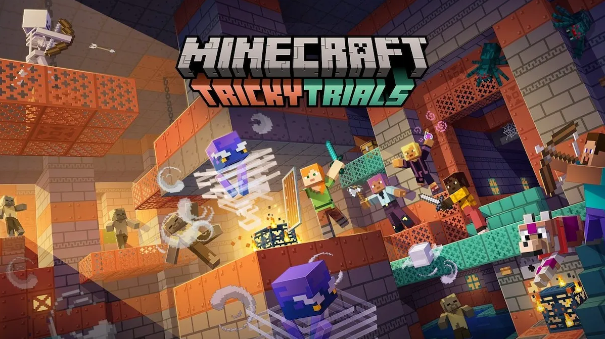

Modding Minecraft 1.21
¡Bienvenido al fascinante mundo del modding en Minecraft! Si alguna vez has querido darle vida propia al juego, crear tus propias aventuras, o simplemente explorar tus ideas creativas, estás en el lugar adecuado.
¿Qué es el Modding en Minecraft?
Modding en Minecraft es la práctica de modificar el juego para añadir nuevas funciones, cambiar aspectos del juego existente, o incluso crear mundos completamente nuevos. Desde pequeñas modificaciones hasta grandes expansiones, el modding te permite personalizar tu experiencia de juego de manera única.
Primeros Pasos: Preparando tu Entorno de Desarrollo
Antes de sumergirnos en la creación de mods, necesitamos preparar nuestro entorno de desarrollo. Aquí aprenderás cómo instalar las herramientas esenciales como el JDK (Java Development Kit) y un IDE (Entorno de Desarrollo Integrado) como IntelliJ IDEA.
Creación de Items Nuevos
¿Te gustaría añadir tus propios items al juego? Aprenderás cómo crear items personalizados con texturas únicas y comportamientos específicos. Desde espadas legendarias hasta herramientas únicas, ¡el único límite es tu imaginación!
Diseñando y Programando Bloques
Exploraremos cómo diseñar y programar bloques nuevos para Minecraft. Desde bloques decorativos hasta máquinas complejas que transforman tu mundo, descubrirás cómo cada bloque puede agregar profundidad y funcionalidad a tu juego.
Expande tu Horizonte: Más Allá de los Bloques y Items
El modding en Minecraft va más allá de los bloques y items. Aprenderás a manejar eventos del juego, integrar sistemas de economía, y hasta crear NPCs con comportamientos únicos. Cada paso te acercará más a convertir tus ideas en realidad dentro del juego.
¿Listo para Comenzar?
Explora nuestras guías detalladas, tutoriales paso a paso, y ejemplos prácticos para dar tus primeros pasos en el emocionante mundo del modding en Minecraft. Sigue el menú de navegación para empezar tu viaje hacia la creación de mods y transforma Minecraft a tu manera.